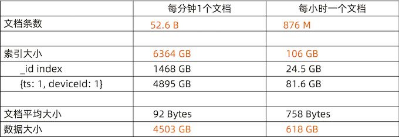

5 Mongo 模型设计
1 模型设计基础
数据模型
什么是数据模型?
数据模型是一组由符号、文本组成的集合，用以准确表达信息，达到有效交流、沟通的目的。
Steve Hoberman 霍伯曼. 数据建模经典教程
数据模型设计的元素
实体 Entity
- 描述业务的主要数据集合
- 谁，什么，何时，何地，为何，如何
属性 Attribute
- 描述实体里面的单个信息
关系 Relationship
- 描述实体与实体之间的数据规则
- 结构规则:1-N， N-1, N-N
- 引用规则:电话号码不能单独存在

传统模型设计:从概念到逻辑到物理
从开发者的视角:概念模型
Contact -> Group
从开发者的视角:逻辑模型
从开发者的视角:第三范式下的物理模型
模型设计小结
数据模型的三要素:
实体 /属性 / 关系
数据模型的三层深度:
- 概念模型，逻辑模型，物理模型
- 一个模型逐步细化的过程
2 JSON 文档模型设计特点
MongoDB 文档模型设计的三个误区
- 不需要模型设计
- MongoDB 应该用一个超级大文档来组织所有数据
- MongoDB 不支持关联或者事务
上述均为错
关于 JSON 文档模型设计
- 文档模型设计处于是物理模型设计阶段 (PDM)
- JSON 文档模型通过内嵌数组或引用字段来表示关系
- 文档模型设计不遵从第三范式，允许冗余。

为什么人们都说 MongoDB 是无模式?
- 严格来说，MongoDB 同样需要概念/逻辑建模
- 文档模型设计的物理层结构可以和逻辑层类似
MongoDB 无模式由来: 可以省略物理建模的具体过程
逻辑模型 – JSON 模型

文档模型的设计原则:性能和易用
关系模型 vs 文档模型

3 文档模型设计之一:基础设计
3-1 MongoDB 文档模型设计三步曲

第一步:建立基础文档模型
- 根据概念模型或者业务需求推导出逻辑模型 – 找到对象
- 列出实体之间的关系(及基数) - 明确关系
- 套用逻辑设计原则来决定内嵌方式 – 进行建模
- 完成基础模型构建
一个联系人管理应用的例子
1. 找到对象
- Contacts
- Groups
- Address
- Portraits
2. 明确关系
- 一个联系人有一个头像 (1-1)
- 一个联系人可以有多个地址(1-N )
- 一个联系人可以属于多个组，一个组可以有多个联系人 (N – N)

1-1 关系建模: portraits
- 基本原则：
- 一对一关系以内嵌为主
- 作为子文档形式 或者直接在顶级
- 不涉及到数据冗余
- 例外情况
- 如果内嵌后导致文档大小超过16MB

1-N 关系建模: Addresses
- 基本原则
- 一对多关系同样以内嵌为主
- 用数组来表示一对多
- 不涉及到数据冗余
- 例外情况
- 内嵌后导致文档大小超过16MB
- 数组长度太大(数万或更多)
- 数组长度不确定

N-N 关系建模:内嵌数组模式
- 基本原则
- 不需要映射表
- 一般用内嵌数组来表示一对多
- 通过冗余来实现N-N
- 例外情况
- 内嵌后导致文档大小超过16MB
- 数组长度太大(数万或更多)
- 数组长度不确定
Contacts
name: "TJ Tang",
company: ”TAPDATA"
title: " CTO"
portraits: {
mimetype: xxx
data: xxxx
}，
addresses: [
{ type: home, ... },
{ type: work, ... }
]，
groups: [
{name: ”Friends” },
{name: ”Surfers” },
]
小结
- 90:10 规则: 大部分时候你会使用内嵌来表示 1-1，1-N，N-N
- 内嵌类似于预先聚合(关联)
- 内嵌后对读操作通常有优势(减少关联)
4 文档模型设计之二:工况细化
第二步:根据读写工况细化

- 最频繁的数据查询模式
- 最常用的查询参数
- 最频繁的数据写入模式
- 读写操作的比例
- 数据量的大小
- 基于内嵌的文档模型
- 根据业务需求，
- 使用引用来避免性能瓶颈
- 使用冗余来优化访问性能
联系人管理应用的分组需求
- 用于客户营销
- 有千万级联系人
- 需要频繁变动分组(group) 的信息，如增加分组及修改名称及描述以及营销状态
- 一个分组可以有百万级联系人

解决方案: Group 使用单独的集合
- 类似于关系型设计
- 用 id 或者唯一键关联
- 使用
$lookup来提供一次查询多表 的能力(类似关联）

引用模式下的关联查询
https://www.mongodb.com/docs/manual/reference/operator/aggregation/lookup/
db.contacts.aggregate([
{
$lookup:
{
from: "groups",
localField: "group_ids",
foreignField: "group_id",
as: "groups"
} }
])
from: <collection to join>,localField: <field from the input documents>,foreignField: <field from the documents of the "from" collection>,as: <output array field>
联系人的头像: 引用模式
- 头像使用高保真，大小在 5MB- 10MB
- 头像一旦上传，一个月不可更换
- 基础信息查询(不含头像)和 头 像查询的比例为 9 :1
- 建议: 使用引用方式，把头像数 据放到另外一个集合，可以显著提 升 90% 的查询效率

什么时候该使用引用方式?
- 内嵌文档太大，数 MB 或者超过 16MB
- 内嵌文档或数组元素会频繁修改
- 内嵌数组元素会持续增长并且没有封顶
MongoDB 引用设计的限制
- MongoDB 对使用引用的集合之间并无主外键检查
- MongoDB 使用聚合框架的
$lookup来模仿关联查询$lookup只支持 left outer join$lookup的关联目标(from)不能是分片表

5 文档模型设计之三:模式套用
第三步:套用设计模式
- 文档模型: 无范式，无思维定式，充分发挥想象力
- 设计模式:实战过屡试不爽的设计技巧，快速应用
- 举例:一个 IoT 场景的分桶设计模式，可以帮助把存储空间降低 10 倍并且查询效率提 升数十倍.

问题: 物联网场景下的海量数据处理 – 飞机监控数据
{
"_id" : "20160101050000:CA2790",
"icao" : "CA2790",
"callsign" : "CA2790",
"ts" : ISODate("2016-01-01T05:00:00.000+0000"),
"events" : {
"a" : 31418,
"b" : 173,
"p" : [115, -134],
"s" : 91,
"v" : 80
}
}
520亿条，10TB – 海量数据
- 10万架飞机
- 1年的数据
- 每分钟一条

解决方案: 分桶设计
一个文档:一架飞机一个小时的数据
60 Events == 1 小时数据
{
"_id" : "20160101050000:WG9943",
"icao" : "WG9943",
"ts" : ISODate("2016-01-01T05:00:00.000+0000"),
"events" : [
{
"a" : 24293, "b" : 319, "p" : [41, 70], "s" : 56,
"t" : ISODate("2016-01-01T05:00:00.000+0000“)
}, {
"a" : 33663, "b" : 134, "p" : [-38, -30], "s" : 385,
"t" : ISODate("2016-01-01T05:00:01.000+0000“)
},
...
]
}
520亿条，10TB – 海量数据
可视化表现 24 小时的飞行数据 1440 次读

模式小结:分桶

本讲小结
一个好的设计模式可以显著地:
- 提升数据读写的效率
- 降低资源的需求
更多的 MongoDB 设计模式:
6 设计模式集锦
问题1 : 大文档，很多字段，很多索引
{
title: "Dunkirk",
...
release_USA: "2017/07/23",
release_UK: "2017/08/01",
release_France: "2017/08/01",
release_Festival_San_Jose:
"2017/07/22"
}
需要很多索引
{ release_USA: 1 }
{ release_UK: 1 }
{ release_France: 1 }
...
{ release_Festival_San_Jose: 1 }
...
解决方案: 列转行
{
title: "Dunkirk",
...
releases: [
{ country: “USA”, date:”2017/07/23”},
{ country: “UK”, date:”2017/08/01”}
]
}
db.movies.createIndex({“releases.country”:1, “releases.date”:1})
模式小结: 列转行

问题2: 模型灵活了，如何管理文档不同版本?
2019.01 版本1.0
{
"_id" : ObjectId("5de26f197edd62c5d388babb"),
"name" : "TJ",
"company" : "Tapdata",
}
2019.03 版本2.0
{
"_id" : ObjectId("5de26f197edd62c5d388babb"), "name" : "TJ",
"company" : "Tapdata",
"wechat": "tjtang826"
}
解决方案: 增加一个版本字段
{
"_id" : ObjectId("5de26f197edd62c5d388babb"), "name" : "TJ",
"company" : "Tapdata",
"wechat": "tjtang826”，
"schema_version": "2.0"
}
"schema_version": "2.0"
模式小结: 版本字段

问题3: 统计网页点击流量
- 每访问一个页面都会产生一次数据库计数更新操作
- 统计数字准确性并不十分重要

解决方案: 用近似计算
每隔10 (X)次写一次 Increment by 10(X)

模式小结:近似计算

问题4: 业绩排名，游戏排名，商品统计等精确统计
- 热销榜:某个商品今天卖了多少，这个星期卖了多少，这个月卖了多少?
- 电影排行:观影者，场次统计
- 传统解决方案:通过聚合计算
- 痛点:消耗资源多，聚合计算时间长
解决方案: 用预聚合字段
{
product: ”Bike",
sku: “abc123456”,
quantitiy: 20394,
daily_sales: 40,
weekly_sales: 302,
monthly_sales: 1419
}
db.inventory.update({_id:123},
{$inc: {
quantity: -1,
daily_sales: 1,
weekly_sales: 1，
monthly_sales: 1，
}
)